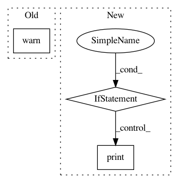

4296d854f38a7544eb02cd72d9cdb11e215051ce,pudl/init.py,,_ETL_cems,#Any#Any#Any#Any#Any#Any#,640
Before Change
index.create(pudl_engine)
except sa.exc.ProgrammingError as e:
from warnings import warn
warn(f"Failed to add index/constraint "{index.name}"\n" +
"Details:\n" + e)
// Constraints don"t have create() methods
try:
sa.UniqueConstraint(
pudl.models.epacems.HourlyEmissions.orispl_code,
After Change
// The keys to the dict are a tuple (year, month, state)
for transformed_df in transformed_df_dict.values():
loader.add(transformed_df)
if verbose:
time_message = " Loading EPA CEMS took {}".format(
time.strftime("%H:%M:%S", time.gmtime(time.monotonic() - start_time))
)
print(time_message)
start_time = time.monotonic()
pudl.models.epacems.finalize(pudl_engine)
if verbose:
time_message = " Finalizing EPA CEMS took {}".format(
time.strftime("%H:%M:%S", time.gmtime(time.monotonic() - start_time))
In pattern: SUPERPATTERN
Frequency: 3
Non-data size: 3
Instances
Project Name: catalyst-cooperative/pudl
Commit Name: 4296d854f38a7544eb02cd72d9cdb11e215051ce
Time: 2018-07-05
Author: karldw@users.noreply.github.com
File Name: pudl/init.py
Class Name:
Method Name: _ETL_cems
Project Name: Theano/Theano
Commit Name: f7596c63874a9661abd60c4e9b09b4ff55acd1c0
Time: 2016-12-22
Author: abergeron@gmail.com
File Name: theano/gpuarray/__init__.py
Class Name:
Method Name: init_dev
Project Name: NeuromorphicProcessorProject/snn_toolbox
Commit Name: bf20758f1001f7672aaa0e2de153b3349bc722fa
Time: 2019-06-13
Author: selin.fabel@uzh.ch
File Name: snntoolbox/simulation/target_simulators/brian2_target_sim.py
Class Name: SNN
Method Name: save